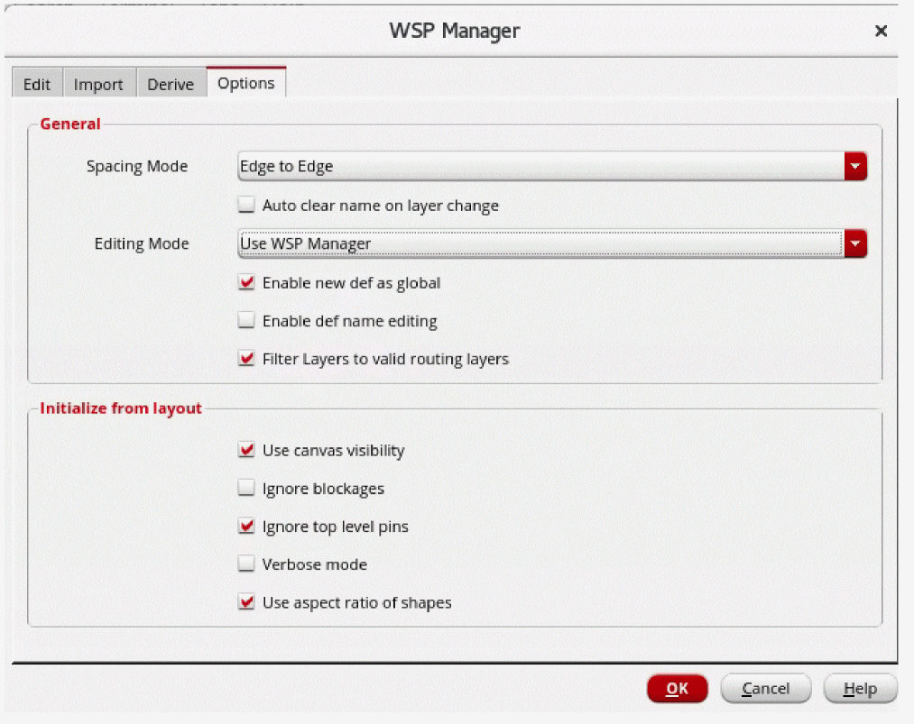
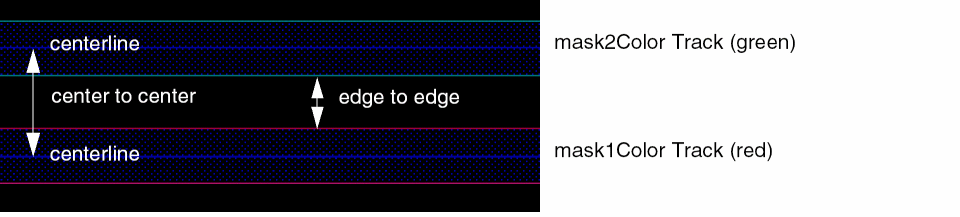
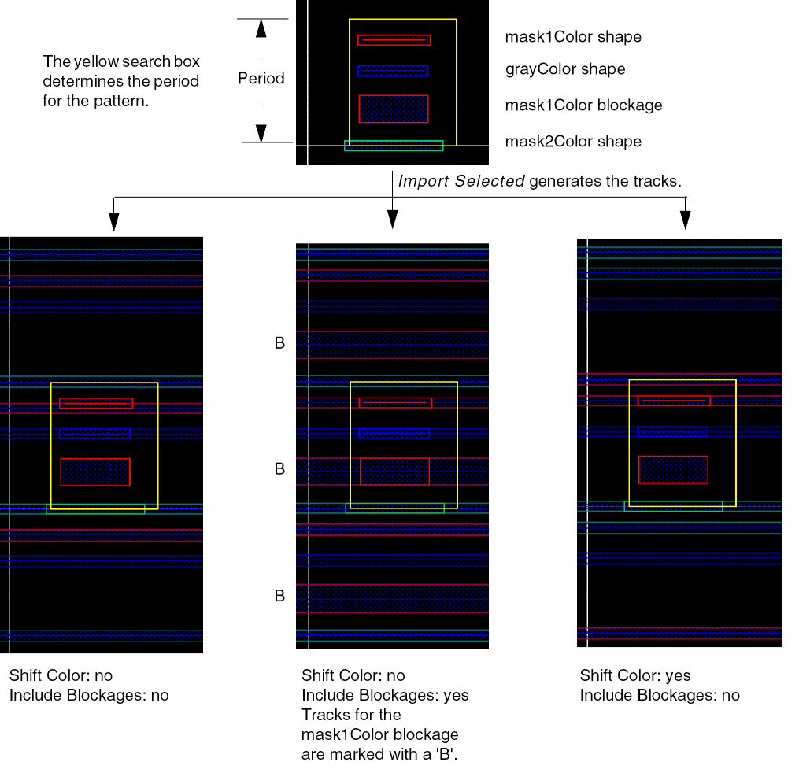
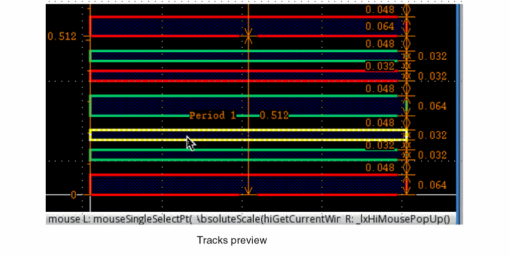
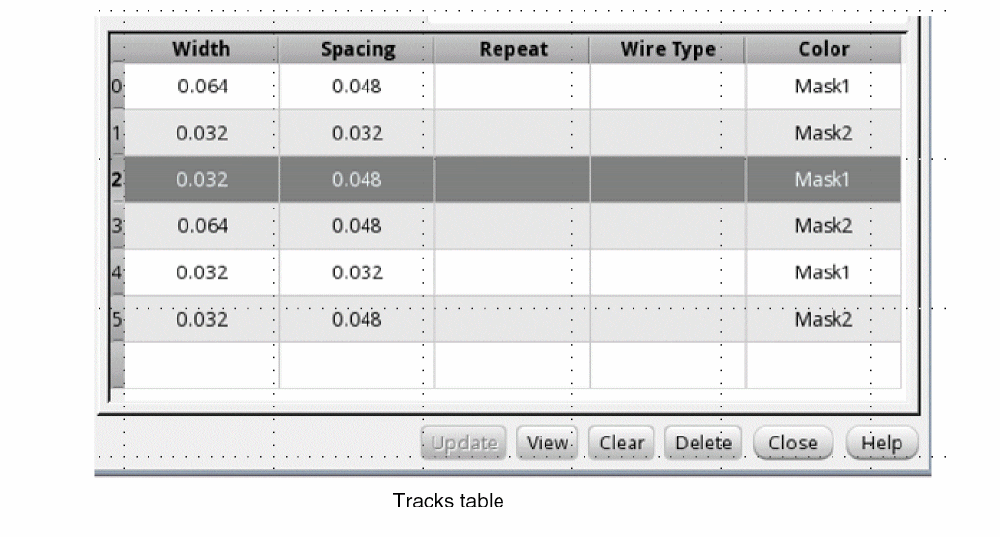

Specifying WSP Options
In the Options page of WSP Manager, you can specify the options to be used when creating, modifying, copying, or generating width spacing patterns.

-
Choose the Spacing Mode from the drop-down list box, Center to Center or Edge to Edge.
The center-to-center spacing between two tracks equals the edge-to-edge spacing between the tracks plus one-half the width of each track, as shown below:
To understand how changing the Spacing Mode setting affects the First Track Offset value, see How Spacing Mode and First Track Offset Are Related.
The following example shows the effect of the Shift Color and Include Blockages options.
 - Click the Auto clear name on layer change check box to automatically clear the name in the Layer field on the Edit tab when you change the layer name.
-
Choose the Editing Mode from the drop-down list box, Use WSP Manager (Pattern Viewer read-only) or Use Pattern Viewer (Period and Track table read-only).
-
Use WSP Manager (Pattern Viewer read-only)
Lets you update the tracks on the Edit tab. Then, you can preview the tracks.  -
Use Pattern Viewer (Period and Track table read-only)
Lets you edit the tracks graphically. The tracks table is updated based on the edits in the preview. You must make the edits in the first period region. The edits you can make include creating shapes, changing the colors of tracks, or deleting, stretching, or moving tracks. 
-
Use WSP Manager (Pattern Viewer read-only)
- Click the Enable new def as global check box to make the new WSSPDef as a global WSSPDef and is set globally active if there are no pre-existing globally active definitions on the same layer.
- Click the Enable def name editing check box to display the WSP Def Name field on the Edit tab that lets you modify the WSSPDef name. The new name is used to create the WSSPDef.
- Click the Filter Layers to valid routing layers to filter the layers listed in the Layers field on the Edit tab to valid routing layers.
- Click the Use canvas visibility check box to use the visibility options specified in the Palette assistant and Display Levels: Stop in the Display Options form.
- Click the Ignore blockages check box to include or exclude blockages when creating tracks.
- Click the Ignore top level pins check box to include or exclude pins at the top level when creating tracks.
- Click the Verbose mode check box to display debug messages in the CIW.
- Click the Use aspect ratio of shapes check box to ignore the shapes that are not drawn along the right direction.
The shapes on the "annotation" purpose are ignored when initializing width spacing patterns from layout.
When you copy a related snap pattern, it’s attributes are also copied.
Related Topics
SKILL Functions for Width Spacing Patterns
Return to top